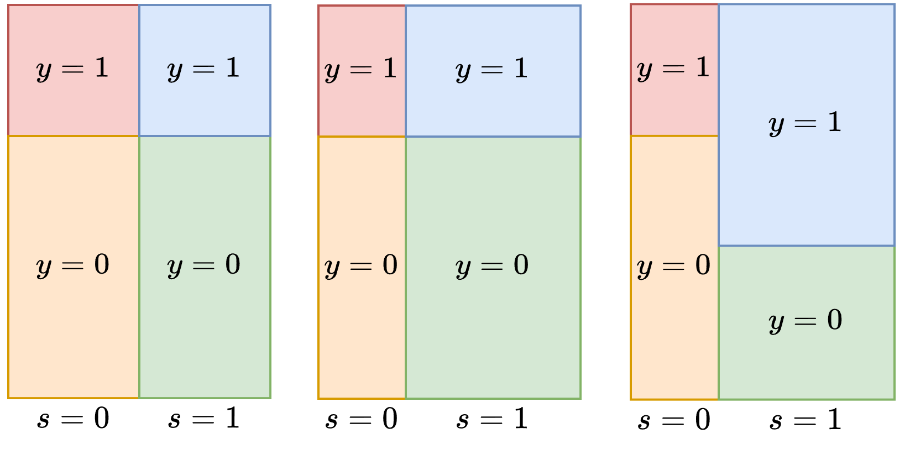

Critique of “50 Years of Test (Un)fairness”¶
Context of fairness definitions and measures¶
Train a model on some data
Examine the behavior of the trained model
Functions of TP, FP, TN, FN (e.g. sufficiency or separation)
Correlation \(\rho_{AR}\) between demographic feature \(A\) and prediction \(R\)
Data vs Model Fairness¶
The same procedure may lead to a fair or unfair model depending on the data
The balance will determine which types of fairness are achieved during ERM

Interpretability vs Fairness¶
Example: CORALS algorithm

What makes this unfair?
Changing sex from male to female results in a change in the prediction for anyone aged 18-20 with 0-1 prior offenses.
What is the takeaway supposed to be?¶
The author’s advise us to look into the behavior of unfair models to debug them
The answer will always be the same: unfairness minimizes risk on the data
They advise us to consider how intersectionality can be modeled
Considering more intersections of subgroups will eventually lead back to individual analysis